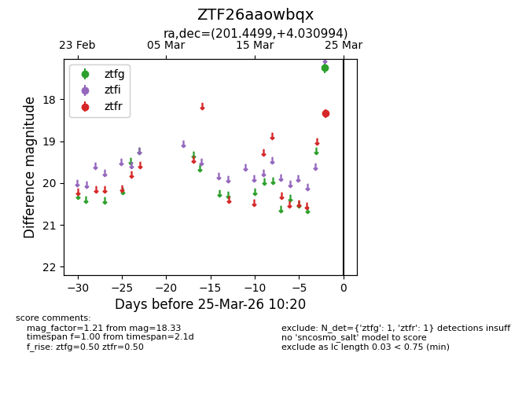
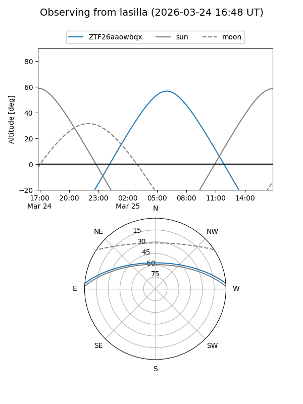
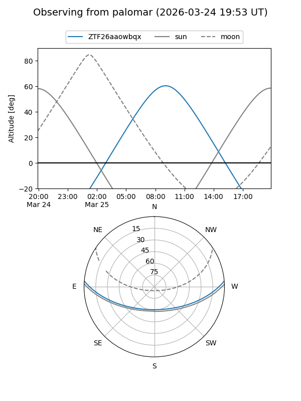

ZTF26aaowbqx
Target ZTF26aaowbqx at 2026-03-25 10:22
Aliases and brokers:
FINK: link
Lasair: link
ALeRCE: link
alt names
ZTF26aaowbqx (ztf,fink_ztf)
Coordinates:
equatorial (ra, dec) = 201.4499,+4.03099
equatorial (HMS+DMS) = 13:25:47.97,+04:01:51.58
galactic (l, b) = (323.9798,+65.48886)
Flags:
Photometry:
last ztfg=17.24, ztfr=18.33
1 ztfg, 1 ztfr detections
Lightcurve

Visibility


Additional plots